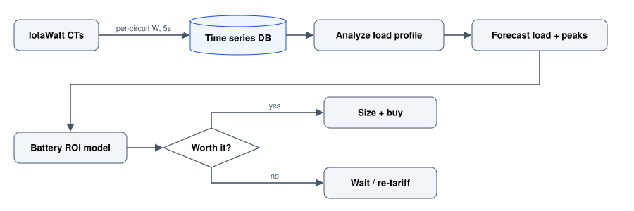

Sense -> Analyze -> Decide: From IotaWatt to a Home-Battery ROI
A full loop of home energy: measure circuits with an IotaWatt, forecast load and peaks, then decide whether a home battery actually pays for itself.
Home energy is a rare project where you get the whole data lifecycle in one place: sense the real load, analyze / forecast it, then decide on capital kit like a battery. This ties together:
- Sensing hardware: IotaWatt in Hardware_Tools
- Forecasting: electricity load and peak on this site
- Decision: the battery payback model below
The loop

Sense: what an IotaWatt gives you
The IotaWatt clamps a CT around each circuit and logs real power every few seconds - no utility meter guesswork. That per-circuit resolution is what makes the later decision honest: you see exactly which loads drive your peaks.
A representative daily load profile - note the morning and evening peaks that a battery would shave:
Analyze + forecast
With history in hand, the load and peak forecasting notebooks forecast both average load and - the number that sizes a battery - the peaks. Peak forecasting matters because demand tariffs and battery sizing both key off the top of the curve, not the mean. See peak forecasting.
Decide: does a battery pay for itself?
The battery model turns the measured profile + tariffs into a payback. The ROI is dominated by self-consumption - how much stored solar you actually use instead of exporting cheap and buying back dear.
| Battery | Usable kWh | Installed cost | Annual saving | Payback |
|---|---|---|---|---|
| Small | 5 | $6,500 | $520 | ~12.5 yr |
| Medium | 10 | $11,000 | $980 | ~11 yr |
| Large | 13.5 | $14,500 | $1,180 | ~12 yr |
Representative figures; depends heavily on tariff, solar size, and usage.
Self-consumption is the whole game
With the medium battery, modelled self-consumption of on-site solar rises from ~40% to ~78% - that delta is the saving.
Takeaway
Measure before you buy. The IotaWatt turns “a battery feels worth it” into a payback curve you can actually defend - and in my modelling, at current tariffs, the honest answer is often “wait for prices to fall or a demand tariff to bite.” The point is that the data, not the vibe, made the call.